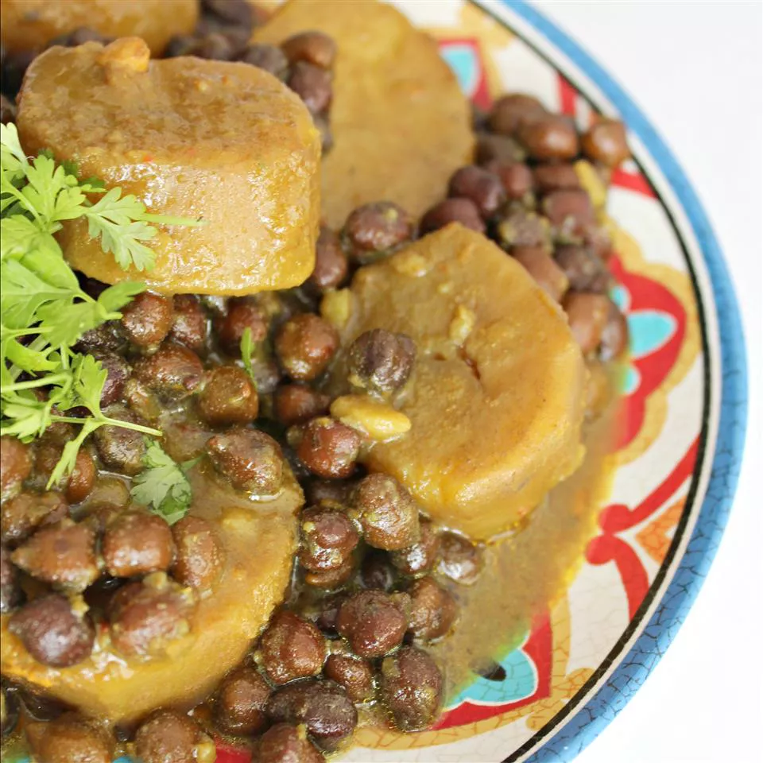

Classic Indian Kala Chana recipe. A bit tart, but very wholesome. Great source of protein for a vegans. Can be served with either chapati/roti or basmati rice.
Sort and clean chickpeas and wash them under cold water; drain. Combine chickpeas, 1/2 teaspoon salt, and baking soda in a large bowl; add 1 quart water. Soak chickpeas for 24 hours; drain.
Combine onion, garlic, and ginger in a blender; add 3 tablespoons water. Blend mixture at high speed until a smooth paste forms.
Heat vegetable oil in a 4-quart pot over medium-high heat. Add cumin seeds and asafoetida; cook and stir until asafoetida expands and cumin seeds darken, about 1 minute. Stir onion paste into cumin mixture, taking great care to avoid splattering. Cook and stir mixture until well mixed and fragrant, about 5 minutes.
Stir chickpeas, potatoes, 1 teaspoon salt, coriander, garam masala, turmeric, and cayenne pepper into onion-cumin mixture; add 2 cups water. Bring liquid to a boil and cover pot; reduce heat and gently simmer for 1 hour. Stir tamarind paste into chickpea mixture; cook, stirring occasionally, for 10 minutes more.